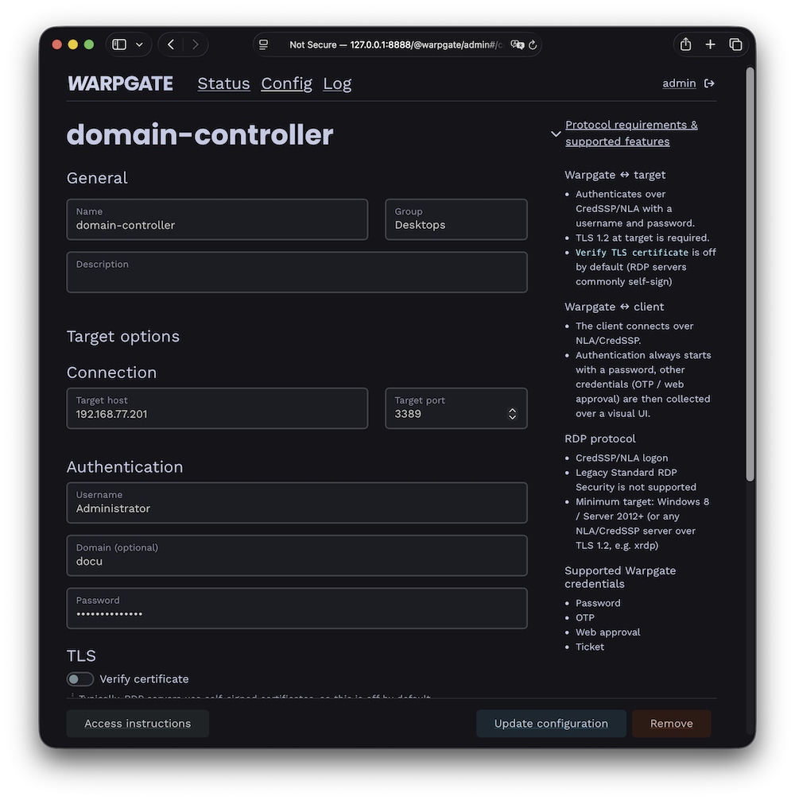
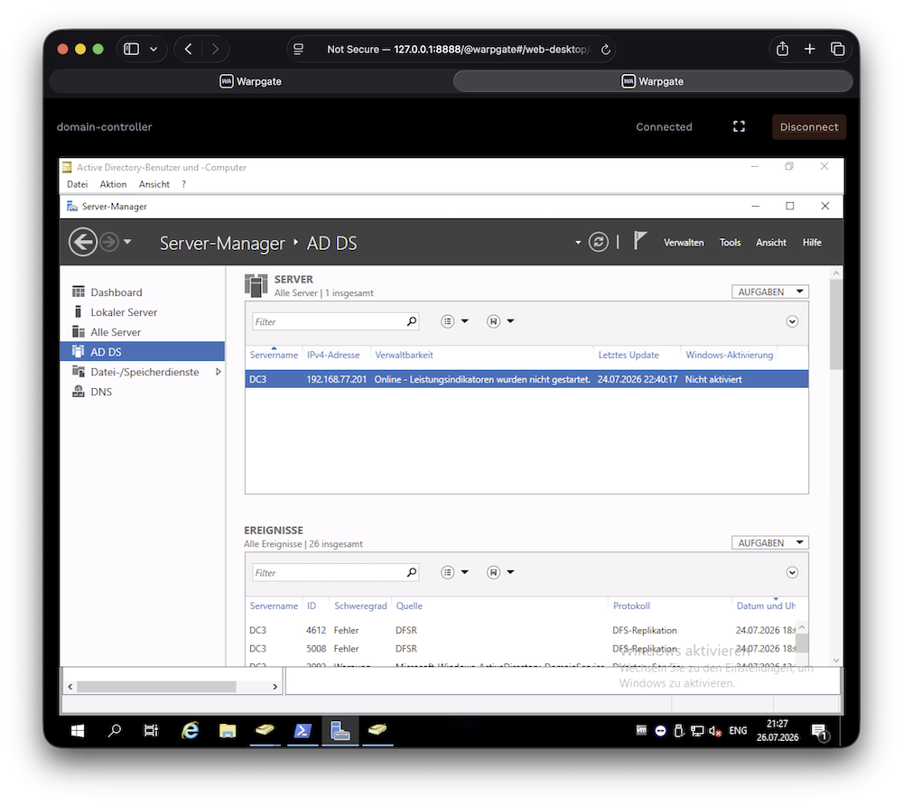
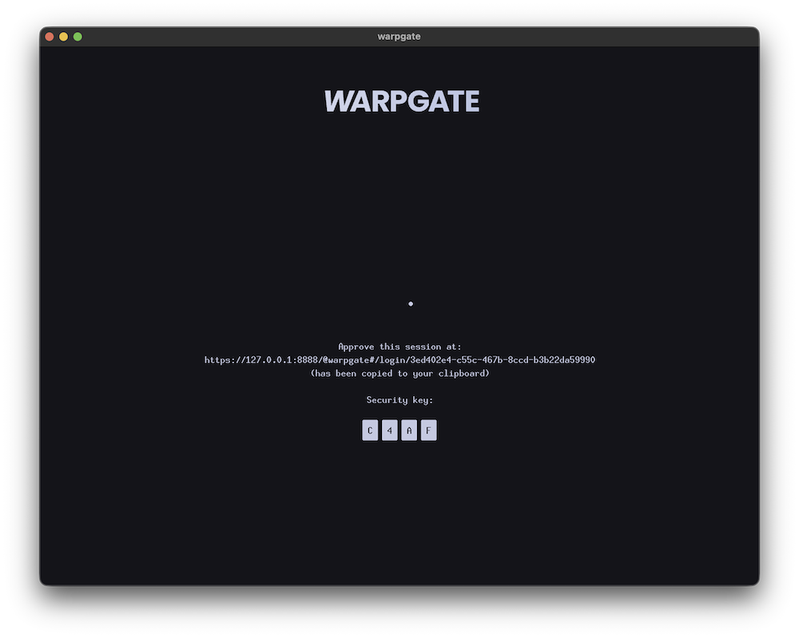

Adding RDP targets§
Warpgate can proxy Microsoft RDP (Remote Desktop) connections, giving them the same authentication, access control and session recording as the other protocols. Users connect with a standard RDP client (mstsc.exe, FreeRDP, Remmina, …) or open the desktop directly in their browser.
How it works§
Warpgate terminates the viewer's RDP connection and authenticates the user with their Warpgate credentials, then opens a fresh connection to the upstream host over TLS + CredSSP (NLA), logging in with the credentials you configured on the target. The entire session is recorded, including user inputs.
Enabling the RDP listener§
Enable the RDP protocol in your config file (default: /etc/warpgate.yaml) if you didn't do so during the initial setup:
+ rdp:
+ enable: true
+ listen: '[::]:3389'
+ certificate: /var/lib/warpgate/tls.certificate.pem
+ key: /var/lib/warpgate/tls.key.pem
You can reuse the same certificate and key that are used for the HTTP listener.
Connection setup§
Log into the Warpgate admin UI, navigate to Config > Targets > Add target, select RDP and give the new target a name.
Fill out the connection and authentication info:

RDP target configuration
Note
Most RDP servers use a self-signed certificate, which is why verification is turned off by default.
The target shows up on the Warpgate homepage for users allowed to access it.
Client setup§
Users can connect in two ways.
In the browser§
Clicking the target opens a web-based desktop client in a new tab — no local RDP client required:

In-browser RDP desktop
The in-browser desktop can be turned off globally under Config > Global parameters, leaving users with connection instructions only.
With a native RDP client§
Point an RDP client (mstsc, FreeRDP, Remmina, …) at:
- Host: the Warpgate host
- Port: the Warpgate RDP port (default: 3389)
- Username:
<user>:<target-name>(for exampleadmin:vm1) - Password: user's Warpgate password
Warpgate authenticates the viewer over NLA/CredSSP. If the account requires a second factor, Warpgate shows a holding screen inside the RDP session:

Collecting a second factor during RDP login
Once authenticated, Warpgate connects to the target and the desktop appears.
Note
The target connection always uses TLS + CredSSP/NLA. The target must therefore accept NLA logons over TLS 1.2 (Windows 8 / Server 2012 or newer, or any NLA/CredSSP server such as xrdp).
Session recording§
When session recording is enabled, RDP sessions are recorded as video and can be replayed from the Admin UI.